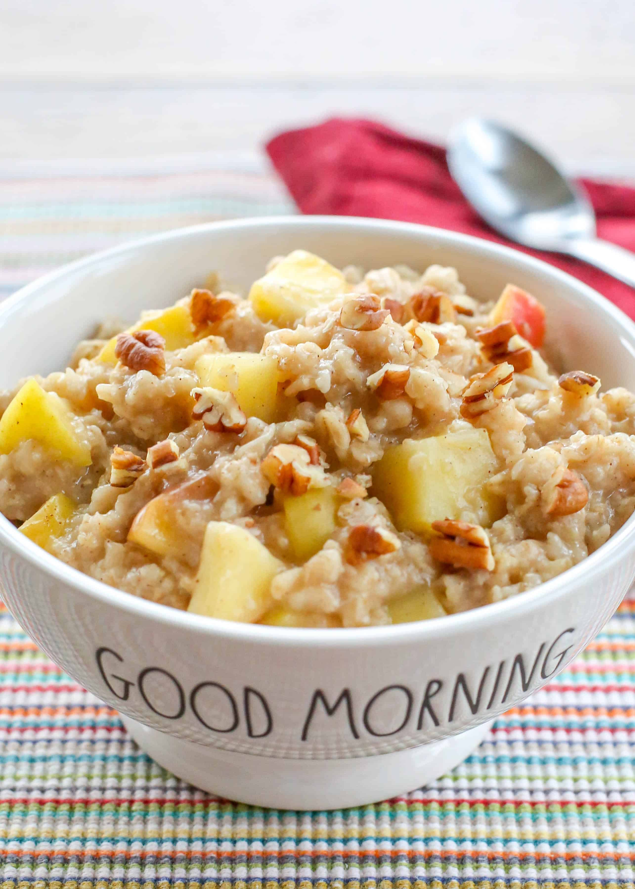

Apple Cinnamon Oatmeal

Add some flavor to your morning oats
This recipe is a great way to add some flavor to a bland bowl of oatmeal!
Ingredients
- Oatmeal of your choice
- 1/2 apple
- cinnamon
- 1 tbsp. butter
- 1 tbsp. brown sugar
Directions
- Prepare oatmeal as directed
- Dice apple into small pieces and add to oatmeal
- Add a dusting of cinnamon, butter, and brown sugar
- Mix it all up and serve!
Tips
- Use swerve brown sugar as a low calorie option
- GOOD butter makes a difference!